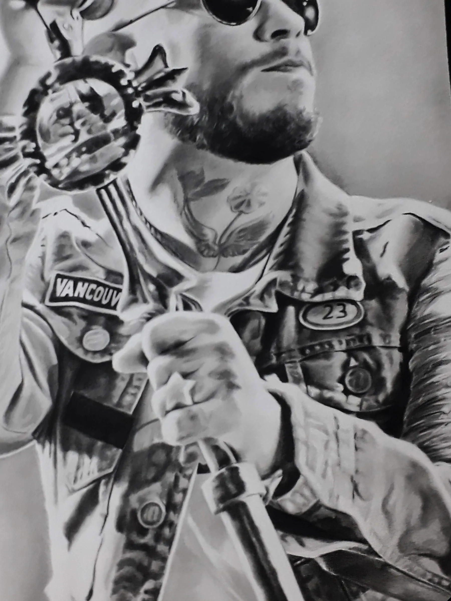
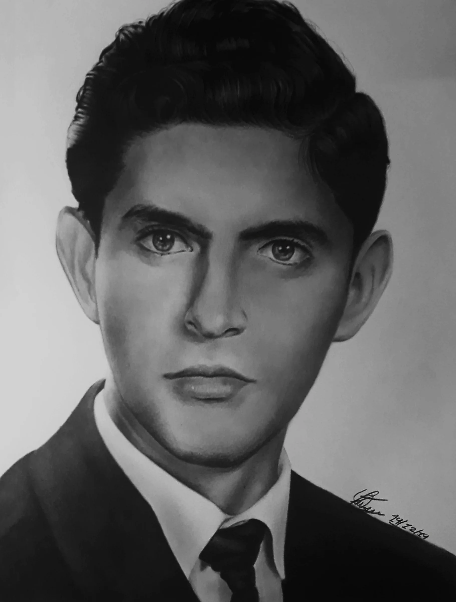
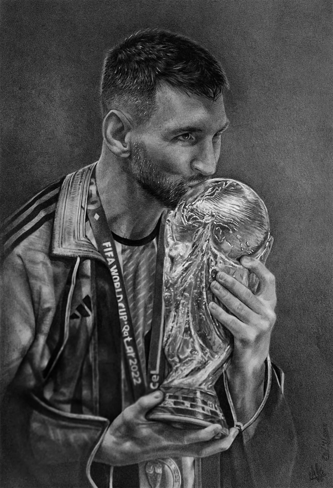
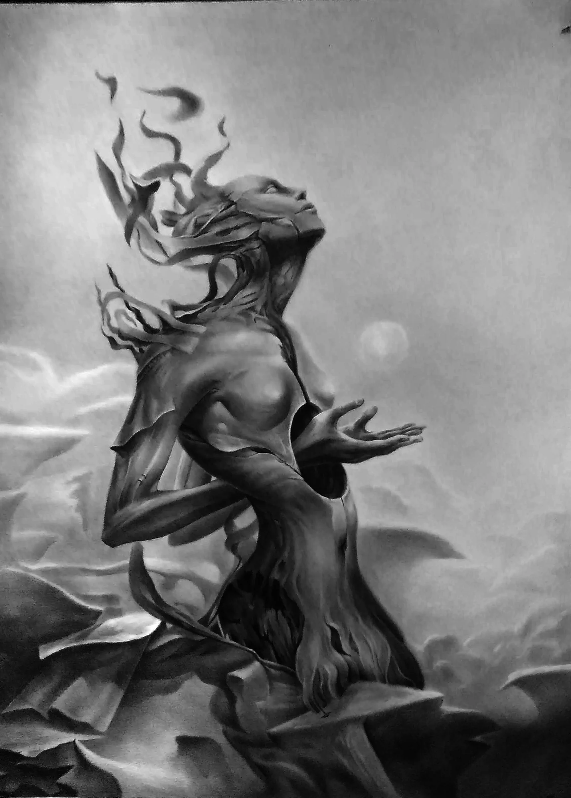

Retratos a lápiz hechos completamente a mano.

Galería de trabajos
Una selección de retratos, dibujos y pinturas realizados a lo largo de los años. Podés abrir cada obra para verla en detalle y conocer su técnica y formato cuando esa información esté disponible.
De la foto al retrato
Compará la fotografía original con el resultado final. El objetivo no es solamente copiar una imagen, sino mantener las proporciones, los rasgos y la expresión para lograr un parecido convincente.
Detrás de cada obra
Trabajo principalmente con grafito sobre papel, usando distintas durezas según el tipo de detalle, sombra o contraste que necesito. Entre mis materiales habituales hay lápices Staedtler 2B, 6B, 8B y 3H, polvo de grafito, sfumino y pinceles para difuminar, además de goma tradicional y goma maleable.
Para los detalles más claros utilizo lápiz blanco y tinta blanca cuando la obra lo necesita. Actualmente trabajo con papel de 142 g.

En retratos de tamaño normal dibujo directamente a mano alzada. Cuando trabajo en formatos muy grandes puedo utilizar cuadrícula como apoyo para mantener correctamente las proporciones.

Durante los encargos suelo enviar fotografías del avance cada pocos días para que la persona pueda seguir cómo se va construyendo el dibujo.

¿Cómo encargar tu retrato?
Si querés encargar un retrato, estos son los pasos principales. La información completa sobre formatos, precios, fotografías y entrega está disponible en la guía de encargos.
Enviá la fotografía
Compartí la imagen que querés usar como referencia. Si tenés varias fotografías, puedo ayudarte a elegir cuál funciona mejor para el dibujo.
Elegimos el formato
Definimos el tamaño y las características del retrato según la fotografía, la composición y la cantidad de personas o mascotas.
Comienza el dibujo
Una vez confirmado el encargo, comienzo la obra y durante el proceso voy compartiendo fotografías del avance.
Hola, soy Alexis
Dibujo desde que era chico. Tengo recuerdos de estar dibujando desde alrededor de los seis años y de haber ido a clases de dibujo durante esa etapa. Con el tiempo dejé las clases, pero nunca dejé de dibujar y continué aprendiendo por mi propia cuenta.
Lo que más me atrae del retrato es lograr el parecido de una persona: entender las proporciones del rostro, la anatomía, las luces y las formas hasta conseguir una imagen reconocible. Messi es uno de los temas que más dibujé a lo largo de los años, aunque también disfruto trabajar otros tipos de figuras y superficies.
Además del retrato, me interesan especialmente los objetos con materiales y reflejos marcados: metales, joyas, armaduras, trofeos, robots y otros elementos donde puedo trabajar textura, brillo y contraste.
Hablemos de tu retrato
Si ya viste la guía y querés consultar por un encargo, podés escribirme por correo electrónico.